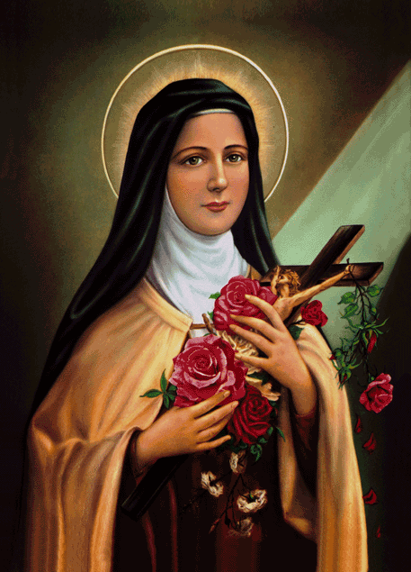

Toca para encender

«No estás aquí para descubrir si eres amada.
Estás aquí para recordar un amor que nunca dejó de existir.»
Santa Teresa del Niño Jesús
Hola, Sophi.
Si estás en este encuentro, probablemente olvidaste algo muy importante.
Hay un error muy antiguo: pensar que el amor hay que ganárselo. Que primero hay que "ser suficiente". Quizás, lo suficientemente bonita. O exitosa. O rica. O inteligente. O lo suficientemente buena. Y solo luego ser dignos de ser amados.
Yo lo pensé. Quizás tú también.
Pero esta idea no es cristiana. De hecho, es opuesta al cristianismo.
«Nosotros amamos porque Él nos amó primero.» 1 Jn 4:19
Toda forma auténtica de amor humano comienza con Él. Pues antes de que existieras... fuiste pensada por Dios. Y siglos antes de que hicieras el primer mérito, ya eras amada.
Sophi...
Todo lo que yo pueda decirte hoy...
siempre será pequeño.
Porque mi amor puede equivocarse.
Puede ser limitado.
Puede terminar con mi muerte.
Pero el amor de Dios no.
Y precisamente porque Él te ama...
yo también aprendí a hacerlo un poquito.
Mientras escribo esto recuerdo la primera vez que te vi.
Recuerdo cuando te acompañé a que cambiaras tus lentes.
Recuerdo nuestra primera cita.
Y no porque esos momentos te hicieran digna de amor.
Sino porque tuve el privilegio de descubrir poco a poco
la mujer que Dios iba formando.
Hay una carta que Dios te lleva escribiendo desde antes de que existieras.
No con tinta. Con versículos.
Lo que sigue son sus palabras — tal como las dejó escritas en las Escrituras —
reunidas en una sola carta. Para ti.
Yo,
Puede que tú no me conozcas, pero Yo conozco todo sobre tí.Sal 139:1 Yo sé cuando te sientas y cuando te levantas.Sal 139:2 Todos tus caminos me son conocidos.Sal 139:3 Aun todos los pelos de tu cabeza están contados.Mt 10:29-31
Porque tú has sido hecha a mi imagen.Gn 1:27 En mí tú vives, te mueves y eres.Hch 17:28 Porque tú eres mi descendencia.Hch 17:28 Te conocí aun antes de que fueras concebida.Jer 1:4-5 Yo te escogí cuando planeé la creación.Ef 1:11-12 Tú no fuiste un error, porque todos tus días están escritos en mi libro.Sal 139:15-16 Yo he determinado el tiempo exacto de tu nacimiento y donde vivirías.Hch 17:26 Tú has sido creada de forma maravillosa.Sal 139:14 Yo te formé en el vientre de tu madre.Sal 139:13 Yo te saqué del vientre de tu madre el día en que naciste.Sal 71:6
Yo he sido mal representado por aquellos que no me conocen.Jn 8:41-44 Yo no estoy enojado y distante, soy la manifestación perfecta del amor.1 Jn 4:16 Y es mi deseo gastar mi amor en tí simplemente porque tú eres mi hija y Yo tu padre.1 Jn 3:1 Te ofrezco mucho más que lo que tu padre terrenal podría darte.Mt 7:11 Porque Yo soy el Padre Perfecto.Mt 5:48
Cada dádiva que tú recibes viene de mis manos.St 1:17 Porque Yo soy tu proveedor quien suple tus necesidades.Mt 6:31-33 El plan que tengo para tu futuro está siempre lleno de esperanza.Jer 29:11
Porque Yo te amo con amor eterno.Jer 31:3 Mis pensamientos sobre tí son incontables como la arena en la orilla del mar.Sal 139:17-18 Me regocijo sobre tí con cánticos.Sof 3:17 Yo nunca pararé de hacerte bien.Jer 32:40 Porque tú eres mi tesoro más precioso.Éx 19:5 Yo deseo afirmarte dándote todo mi corazón y toda mi alma.Jer 32:41 Y Yo quiero mostrarte cosas grandes y maravillosas.Jer 33:3
Si me buscas con todo tu corazón, me encontrarás.Dt 4:29 Deleítate en Mí y te concederé las peticiones de tu corazón.Sal 37:4 Porque Yo soy el que produce tus deseos.Flp 2:13 Yo puedo hacer por tí mucho más de lo que tú podrías imaginar.Ef 3:20
Porque Yo soy tu mayor alentador.2 Tes 2:16-17 Yo también soy el Padre que te consuela durante todos tus problemas.2 Co 1:3-4 Cuando tu corazón está quebrantado, Yo estoy cerca a tí.Sal 34:18 Así como el pastor carga a un cordero, Yo te cargo a tí cerca de mi corazón.Is 40:11 Un día Yo te enjugaré cada lágrima de tus ojos y quitaré todo el dolor que hayas sufrido en esta tierra.Ap 21:3-4
Yo soy tu Padre, y te he amado como a mi hija.Jn 17:23 Porque en Jesús, mi amor hacia tí ha sido revelado.Jn 17:26 Él es la representación exacta de lo que Yo soy.He 1:3 Él ha venido a demostrar que Yo estoy contigo, no contra tí.Ro 8:31 Y también a decirte que Yo no estaré contando tus pecados.2 Co 5:18-19 Porque Jesús se murió para que tú y Yo pudiéramos ser reconciliados.2 Co 5:18-19 Su muerte ha sido la última expresión de mi amor hacia tí.1 Jn 4:10 Por mi amor hacia tí haré cualquier cosa que gane tu amor.Ro 8:31-32
Si tú recibes el regalo de mi Hijo Jesús, tú me recibes a Mí.1 Jn 2:23 Y ninguna cosa te podrá separar otra vez de mi amor.Ro 8:38-39 Vuelve a casa y participa de la mayor fiesta celestial que nunca has visto.Lc 15:7 Yo siempre he sido Padre, y por siempre seré Padre.Ef 3:14-15
La pregunta es... ¿quieres tú ser mi hija?Jn 1:12-13
Yo estoy esperando por tí.Lc 15:11-32
— Tu Padre
Mueve el cursor sobre la carta para descubrirla
Busqué cuál podría ser mi vocación en la Iglesia.
Vi que la Iglesia tiene un corazón,
y que ese corazón está ardiendo de amor.
Comprendí que el amor encerraba todas las vocaciones.
Que el amor era todo.
Entonces, en el exceso de mi alegría, exclamé:
«¡Jesús, mi vocación es el amor!»